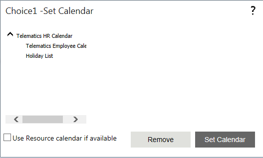

No
Set Calendar for Timeout Property Window
You can set a Calendar to calculate the timeout for the Choice activity in this property window. To access this window, click the button in the 'Set Calendar for Timeout' property.

This window lists the available calendars in a tree structure, with lower-level calendars nested within the respective top-level calendar. You can click on a calendar to select it for setting.
There are two buttons in this window.
The User Resource calendar if available check box can be selected to enable the use of resource calendars if none are displayed in this window for selection.